Custom sheer curtains, cut from forty-six cloths.
A sheer takes the hard edge off a view and keeps the daylight. We keep forty-six of them, from 25 g/m² nets you can read a newspaper through to a 185 g/m² white that is heavy for a voile. Every one is woven 290–360 cm wide, so the curtain is cut in one piece with no seam across the face. Made up and delivered duty paid to the USA, they run $46.54–$67.56 per metre of cloth used. In the UK you may know them as voiles or net curtains.
By weight
Under about 60 g/m² is net weight: very transparent, little privacy. 60–110 g/m² is classic voile, the range most rooms choose. Above 110 g/m² a sheer hangs with real weight and holds a pleat crisply. More on weight.
By fullness
Sheers need generosity. At 2× a voile looks right; at 2.5× to 3× it looks luxurious, and because the cloth is light the stack stays small. How wide should curtains be.
By heading
Ripple fold shows off an even wave; a double pinch pleat looks tailored; a flat panel is for a sheer meant to read as a single plane. The bench lists all nine headings.
By night
A sheer alone does not give privacy after dark. Layer it with a drape on a second track, or a roller blind inside the reveal.
14 of the forty-six, in the same light.
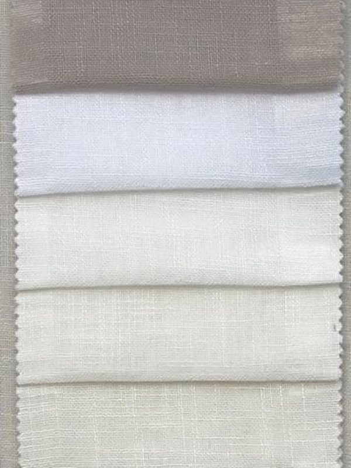
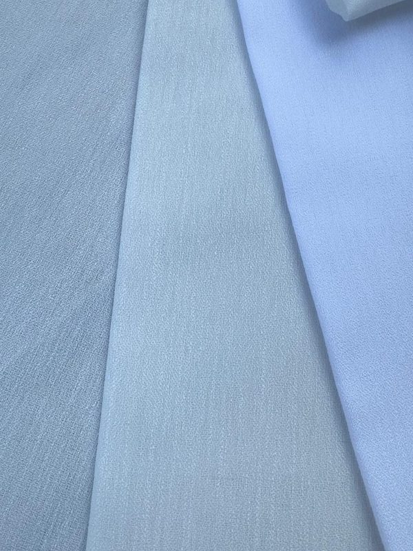
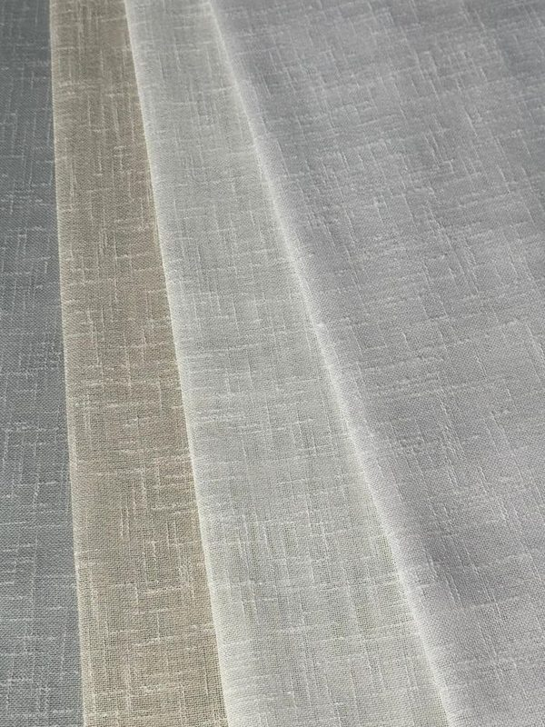
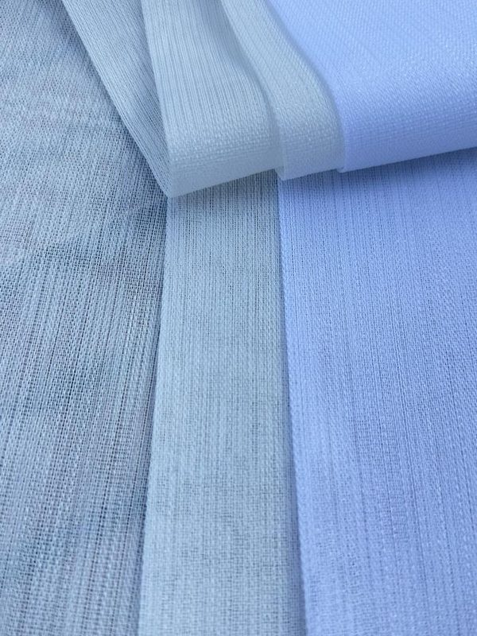
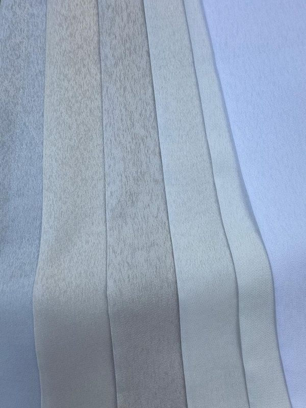
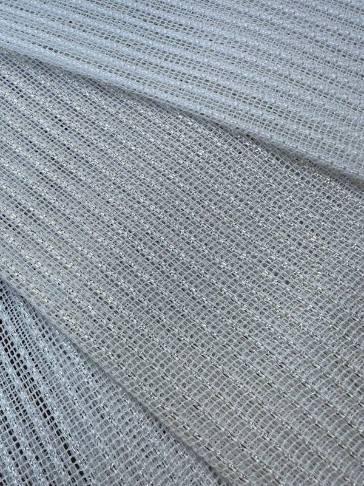
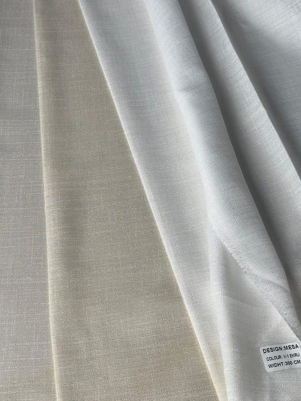
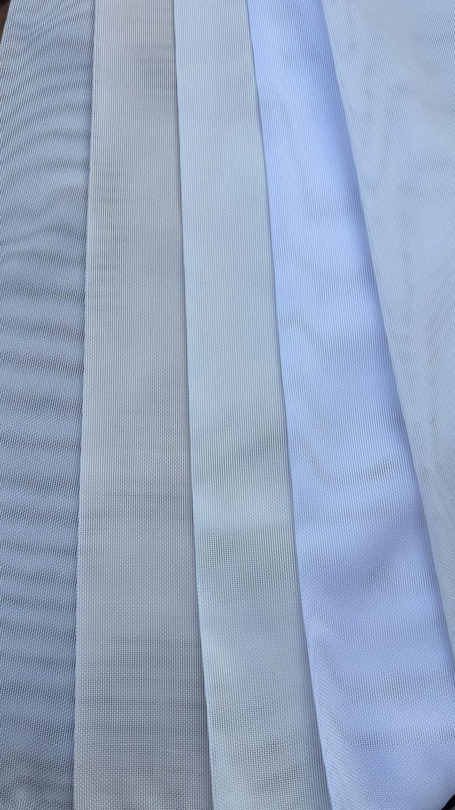
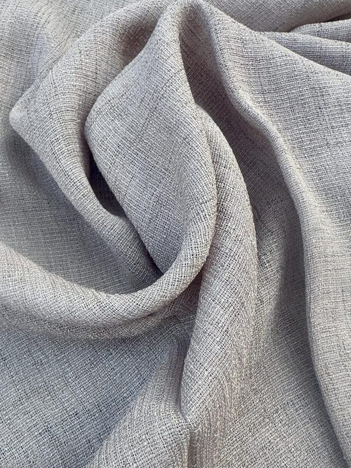
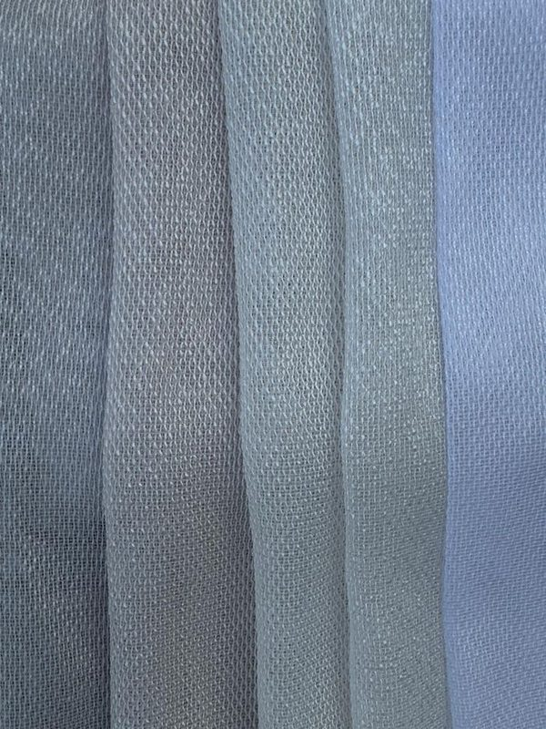
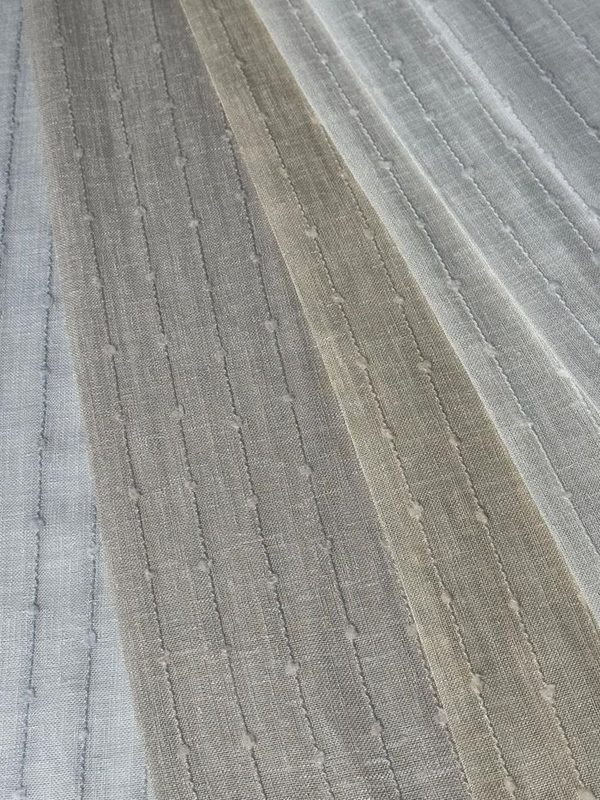
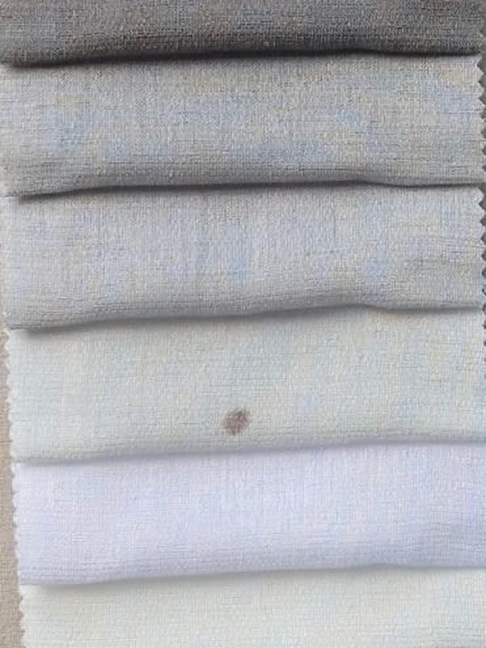
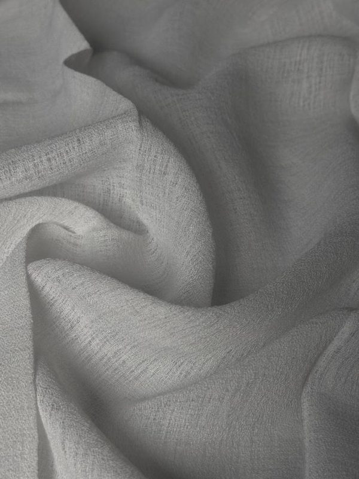
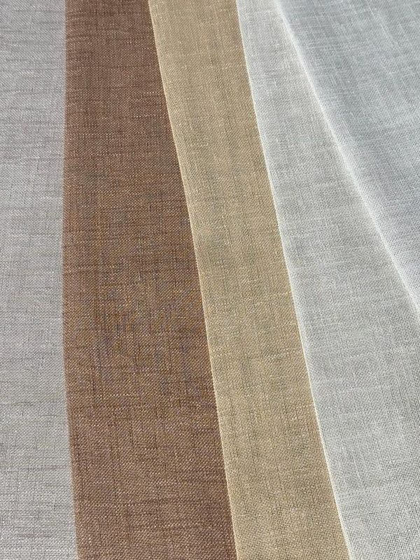
Every sheer in the range, with its real figures.
Weights we have not verified say on request rather than a guess.
| Name | Width | Weight | Per metre, USA duty paid |
|---|---|---|---|
| AGATE | 320 cm | 110 g/m² | $53.12 |
| BASALT | 320 cm | 25 g/m² | $50.01 |
| BRONZE | 290 cm | on request | $51.44 |
| CALCITE | 320 cm | 75 g/m² | $50.91 |
| CARBON | 305 cm | 105 g/m² | $51.68 |
| CHALK | 335 cm | 185 g/m² | $67.56 |
| CHERRY | 330 cm | 95 g/m² | $49.14 |
| CHROME | 315 cm | on request | $52.33 |
| COMET | 310 cm | on request | $62.95 |
| COPPER | 300 cm | on request | $52.74 |
| FLAME | 320 cm | on request | $50.47 |
| FOLDED 320 | 300 cm | on request | $52.16 |
| FOLDED 360 | 360 cm | on request | $49.50 |
| JOK | 300 cm | 100 g/m² | $48.49 |
| JOO | 300 cm | 80 g/m² | $46.66 |
| KEEP | 320 cm | on request | $49.67 |
| KIPI | 320 cm | 70 g/m² | $46.54 |
| LATTICE | 320 cm | 110 g/m² | $53.12 |
| LIGHT | 300 cm | 120 g/m² | $48.87 |
| LILY | 300 cm | 100 g/m² | $48.87 |
| MARBLE | 310 cm | 125 g/m² | $60.35 |
| MESA | 300 cm | 100 g/m² | $49.41 |
| METEOR | 310 cm | on request | $62.95 |
| MICA | 310 cm | on request | $53.12 |
| MOONSTONE | 310 cm | on request | $51.43 |
| NORE | 300 cm | on request | $48.87 |
| NOVA | 300 cm | 120 g/m² | $49.14 |
| ONYX | 340 cm | 110 g/m² | $58.78 |
| ORION | 310 cm | on request | $61.89 |
| PING | 300 cm | 90 g/m² | $47.46 |
| POLY | 320 cm | 110 g/m² | $49.41 |
| PRISM | 320 cm | 90 g/m² | $51.18 |
| PUMICE | 340 cm | 100 g/m² | $57.83 |
| QUARTZ | 315 cm | 25 g/m² | $50.01 |
| ROSE | 300 cm | on request | $50.47 |
| SAND | 320 cm | on request | $48.61 |
| SHALE | 320 cm | 90 g/m² | $50.50 |
| SLATE | 310 cm | 115 g/m² | $58.07 |
| SOFIA | 300 cm | on request | $50.35 |
| SPIDER | 320 cm | 110 g/m² | $49.74 |
| STEEL | 310 cm | on request | $51.53 |
| SUN | 300 cm | on request | $53.66 |
| TOR | 320 cm | 100 g/m² | $49.94 |
| TRAVERTINE | 310 cm | on request | $52.06 |
| VEGA | 310 cm | on request | $61.89 |
| ZUI | 300 cm | 110 g/m² | $48.87 |
Are sheer curtains see-through?
By day, from outside, people see the cloth rather than the room, because the outside is brighter. After dark, with lights on inside, any sheer becomes see-through. For night-time privacy, pair the sheer with a drape or a roller blind.
What is the difference between sheer and voile?
The names overlap. Voile usually means a plain, fine sheer of roughly 60–110 g/m². Weight is the more reliable guide, which is why every cloth below lists it.
Will a tall sheer have a seam?
No. Our sheers are woven 290–360 cm wide and turned on their side, so the width of the roll becomes the drop and even a floor-to-ceiling sheer is cut in one piece.
How much do custom sheer curtains cost?
Sheers run $46.54–$67.56 per metre of cloth used, delivered duty paid to the USA, with the making, the duty and the freight inside the figure. Each cloth page gives two worked examples.
Is there a minimum order?
No. One window is an order, for private and trade customers alike.
Can I get samples first?
Yes. Samples are free, including the postage, anywhere we ship. Write to info@curtainia.com with the cloth names and your address.
Do you ship sheer curtains to the United States and the UK?
Yes. To the USA we ship delivered duty paid, so the import duty is inside the quoted price. We also export to the UK, the EU and worldwide, quoted delivered per country.
Sheer curtains · Drapes · Blackout curtains · Pinch pleat · Ripple fold · Grommet · Rod pocket · Roller blinds · the whole library